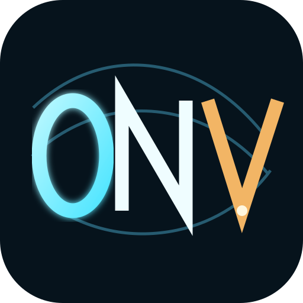
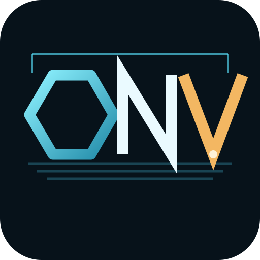
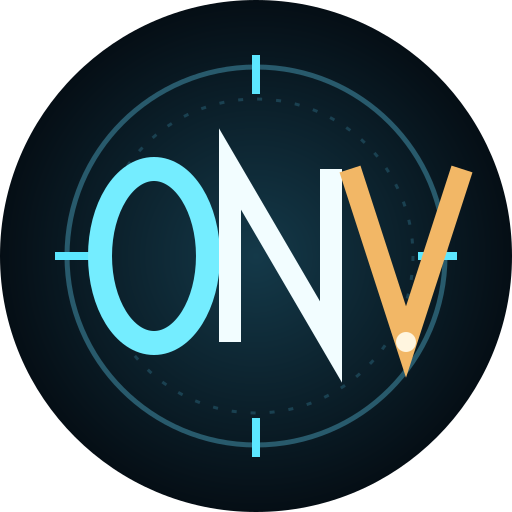
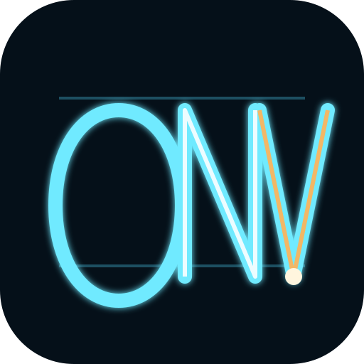
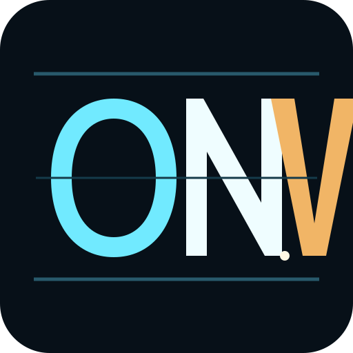

01 — Contour
Atmospheric / cinematic
Open Nevada / identity study
Choose a direction, then I will refine only that one.

Atmospheric / cinematic

Geometric / territorial

Badge / navigational

Continuous / technical

Hard / iconic